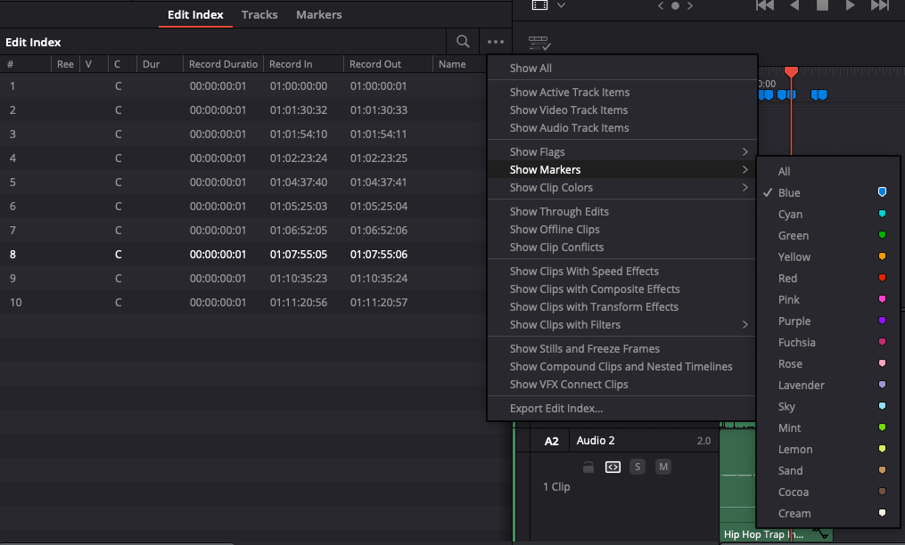
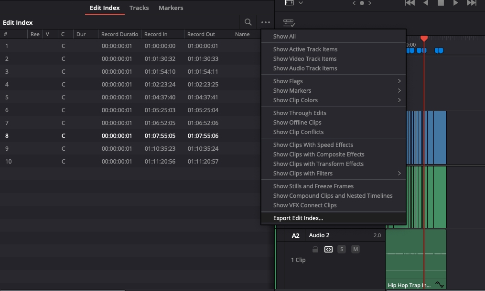
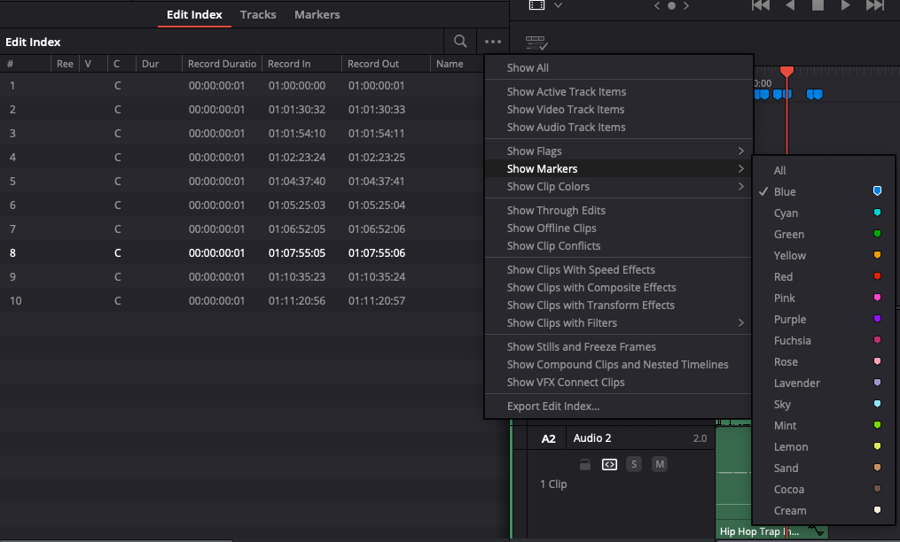
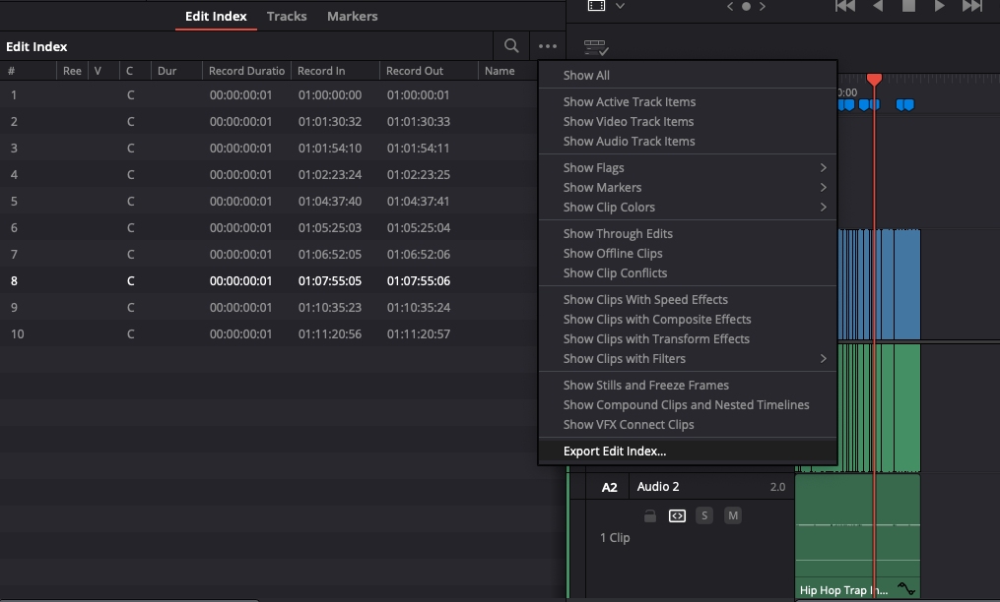

🎬 Chapter Maker for DaVinci Resolve
A modern GUI application that converts DaVinci Resolve markers into YouTube chapters format. This tool helps content creators easily generate properly formatted chapter timestamps for their YouTube videos.
📸 Screenshots
 


